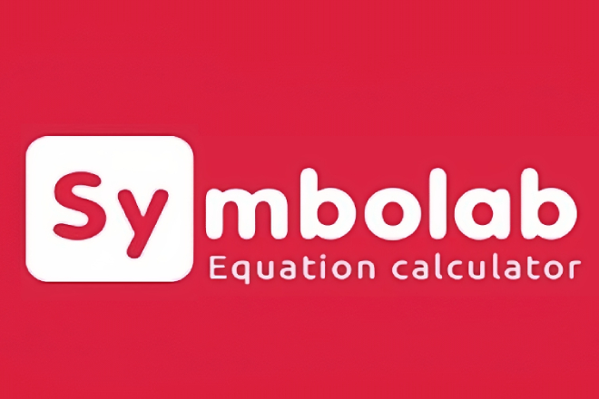

Symbolab, una de las numerosas aplicaciones que propulsa el progreso de las matemáticas, nos motiva a conocerla debido a que sus funciones sofisticadas facilitan la resolución de problemas y la representación visual de estos. Con la capacidad de abordar una variedad de temas que van desde álgebra básica hasta cálculo avanzado y trigonometría, Symbolab se convierte en una herramienta esencial para quienes buscan profundizar en el estudio de las matemáticas, mejorar sus habilidades de resolución de problemas o incluso verificar sus soluciones.
SYMBOLAB
¿QUE ES?

Symbolab es una herramienta completa que incluye desde la solución de ecuaciones hasta el estudio gráfico y el cálculo simbólico. Emplea técnicas avanzadas y algoritmos de inteligencia artificial para ofrecer resultados exactos y fiables. Symbolab se ha diseñado con el objetivo de ser sencillo de utilizar, con una interfaz intuitiva que facilita a estudiantes y profesionales el dominio rápido de matemáticas.